Assignment #8 - Brad Jones

Resizing and Cropping Wu TANG:
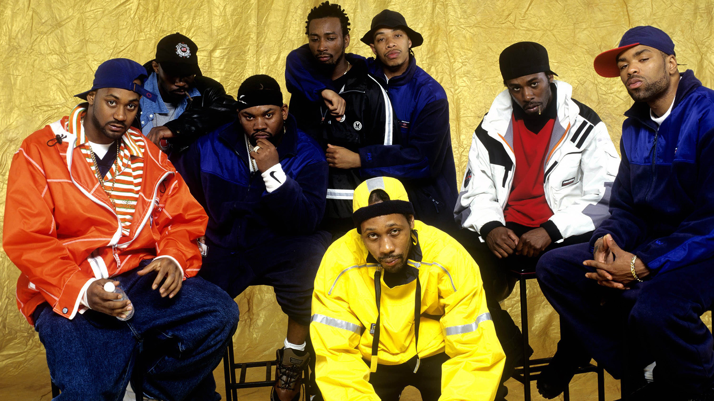Editing images in Paint (This is where I'm from btw)
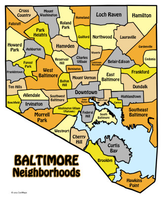 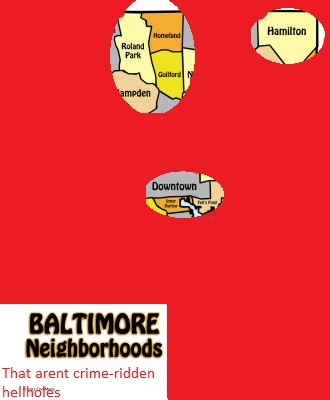Desktop and Active Window scan
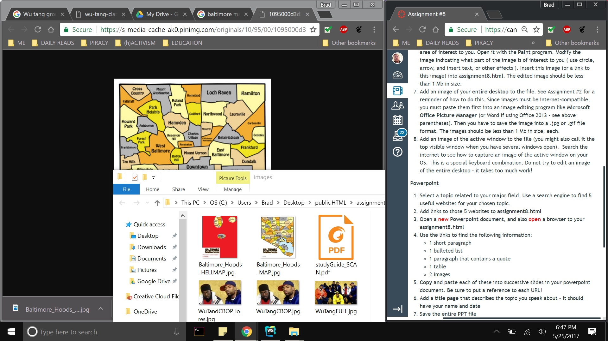 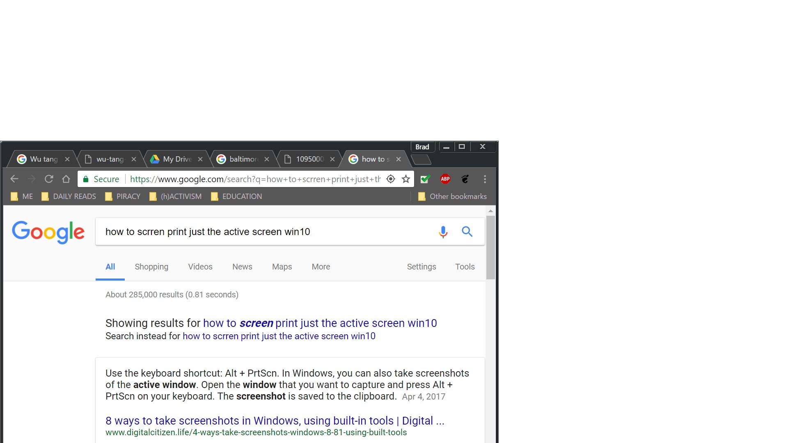Scanned Documents
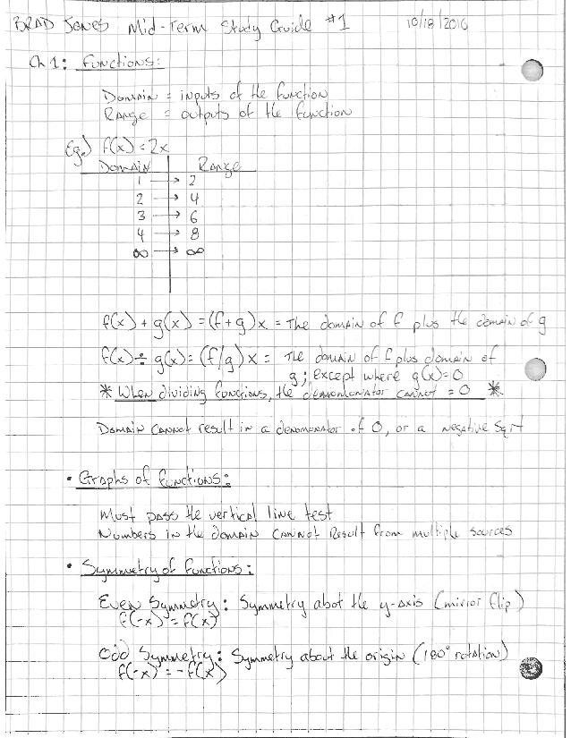
Resizing and Cropping Wu TANG:
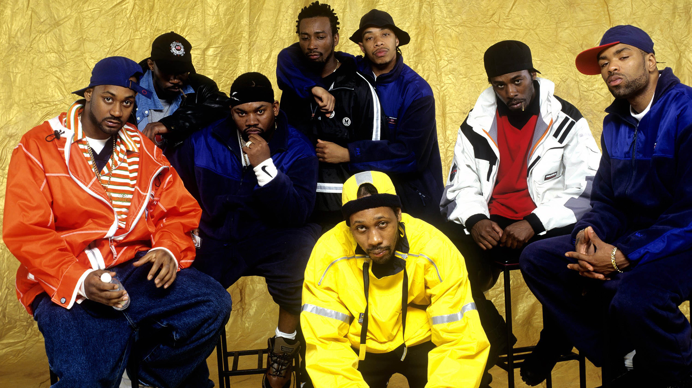Editing images in Paint (This is where I'm from btw)
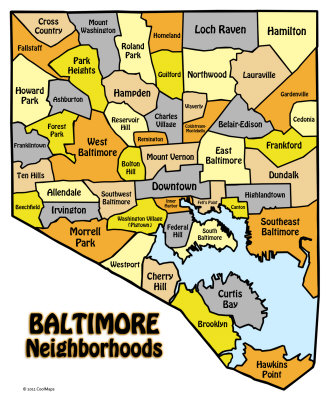 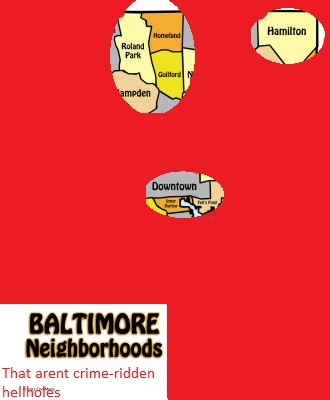Desktop and Active Window scan
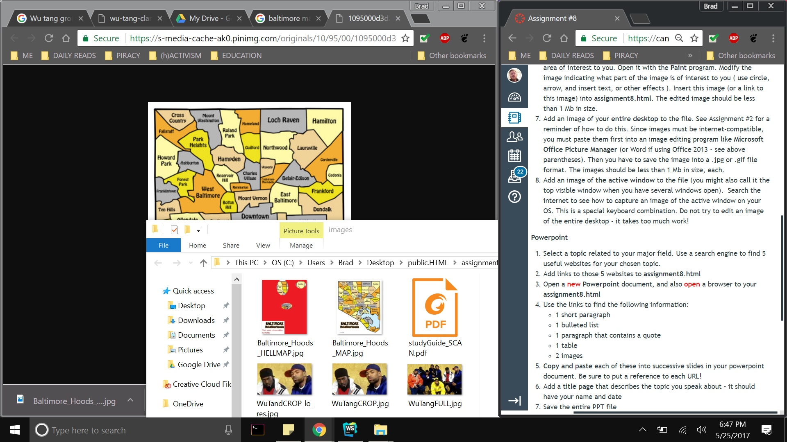 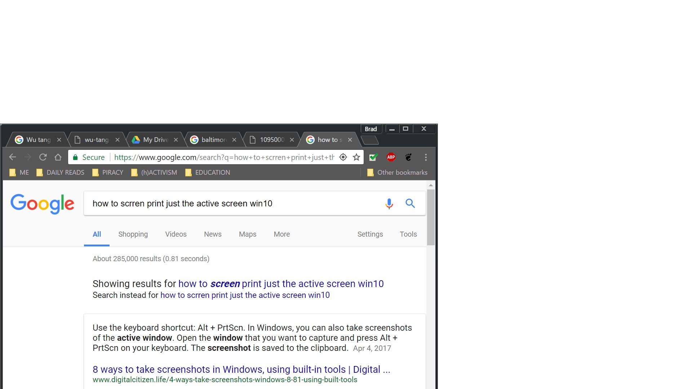Scanned Documents
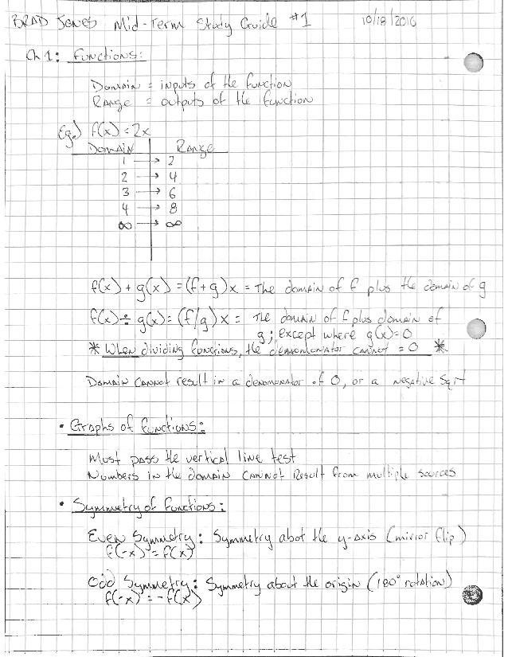